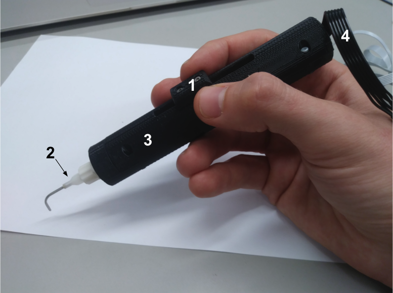
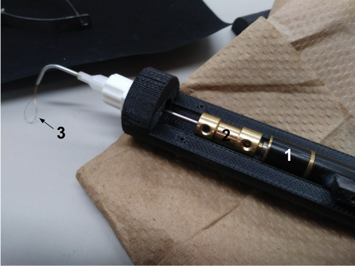

Figure 1.1: The body of the tool (3) fits easily inside of the hand and the size of the wire loop is operated by sliding the nub (1). Although not shown in this image, wire loop comes out of the modified cannula (2), which is essentially a very small tube. Wiring to power and control the DC motor inside the tool (4) leaves out the back.

Figure 1.2: The top of the body of the tool removes give access to the internals. The DC motor (1) rotates the wire loop (3) and slides through the channel inside the body to retract and lengthen the wire loop. The rotation of the motor is translated through a copper coupler (2) to the wire loop.
Cataract surgery, while considered to be a very safe surgery has many of its small number of injuries during a specific portion of the surgery called phacoemulsification. During this portion of the surgery, the cloudy lens is broken down into small pieces and then sucked out of the eye through an irrigation and aspiration tool. Oftentimes, pieces of the lens are stuck to the delicate posterior wall of the lens capsule (where the lens sits inside of), and when bringing the irrigation and aspiration tool close to get these pieces the suction can tear the lens capsule.
I was tasked with designing and prototyping an alternative hand tool under the supervision of Dr. Gerber to completely blend up the lens capsule (even the pieces stuck to the posterior wall), so that the pieces of the lens can safely sucked out of the eye without having to get close to the lens capsule. The hand tool features a finger operated sliding DC motor that spins a wire loop of varying strength and ductility (currently testing fishing wire and copper wire) inside the lens capsule. The finger slide allows the wire to be retracted on entry into the eye and then when inside the eye, the wire loop expands to fill the lens capsule and break apart the lens.
I have gone through two main iterations of the tool, as shown in the pictures. The first iteration was much more robust, chunky, and complex than the final sleeker prototype because after talking with a surgeon, he favored the doctor having direct control of the retraction with their finger over motorized retraction with buttons. He also commented on the importance of a small diameter and pen-like shape, since that is what surgeons are used to and causes the least visual obstruction.
We have been able to complete the first iteration of the prototype by attaching a medical blunt tipped cannula (essentially a really small metal tube) to the 3D printed frame I designed in Solidworks. It was tested on a pig eye and showed promising results with the copper wire, except that it is not able to retract and extend easily to fill the lens capsule. The fishing wire was too flimsy to emulsify the lens.
In the future we are looking into compliant mechanisms to eliminate the need for any wire and have a stronger and more reliable “loop” that fills the lens capsule and retracts very easily. I really look forward to this tool making cataract surgery safer and easier!